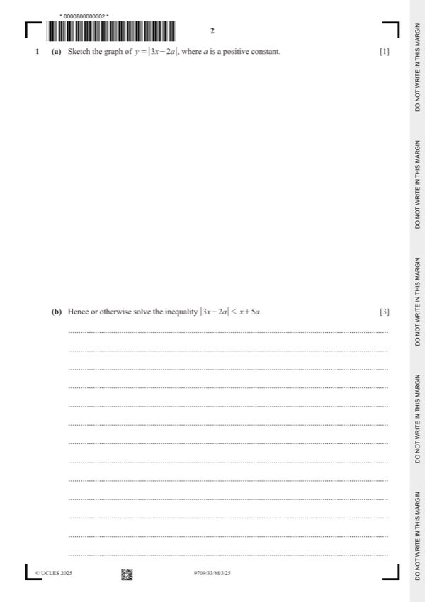

Question 1

Original paper page 2
Part 1(a) — solution
- [B1] Symmetrical. In correct position
Mark points
- [B1] Symmetrical. In correct position
Part 1(b) — solution
- [B1] Allow if seen in an inequality
Mark points
- [B1] Allow if seen in an inequality
Part 1 — solution
- [A1] Ignore terms in higher powers of x
Mark points
- [A1] Ignore terms in higher powers of x